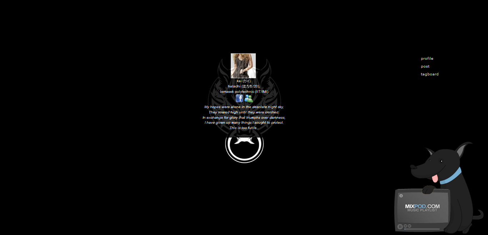

click and grab for zoom!

The first ever layout designed for Blogger during the "Blogging craze" phase using early builds of jQuery.
Inspired by Final Fantasy 7 Advent Children, which to me was one of my favourite among the Final Fantasy series.